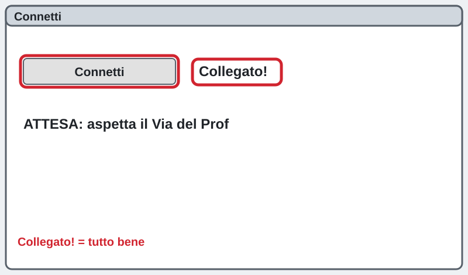
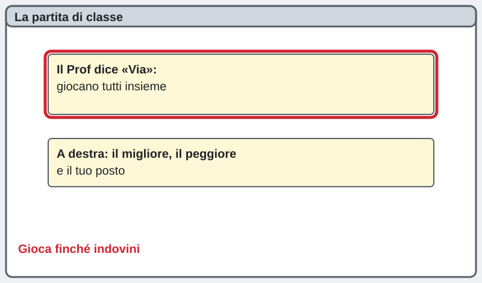
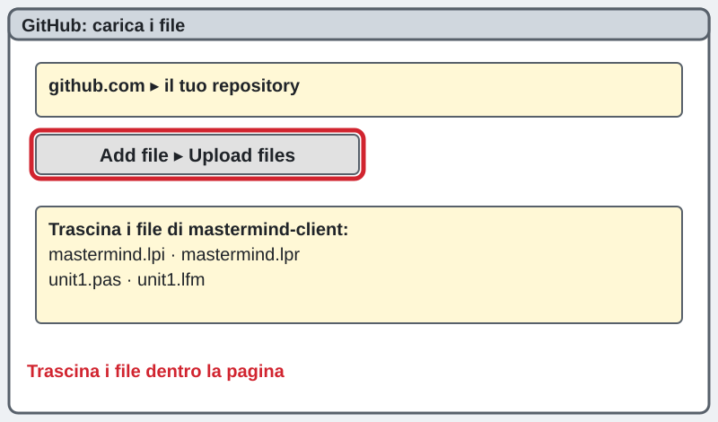
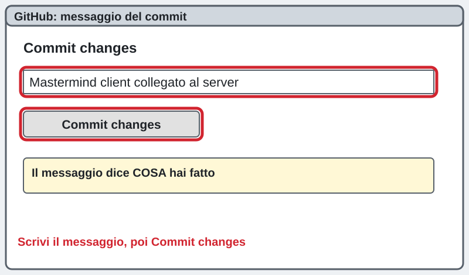
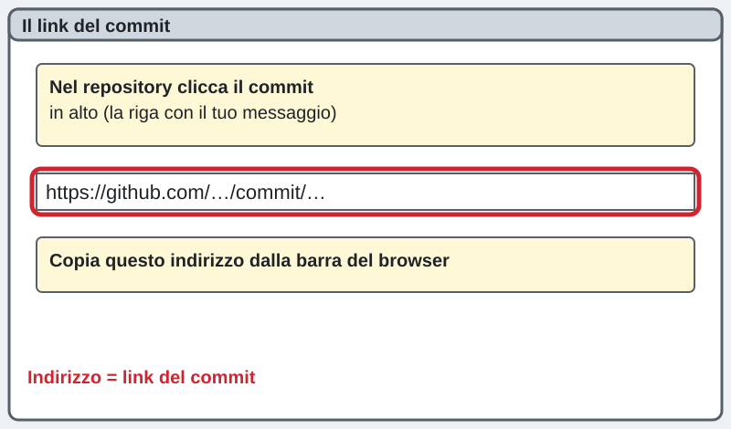
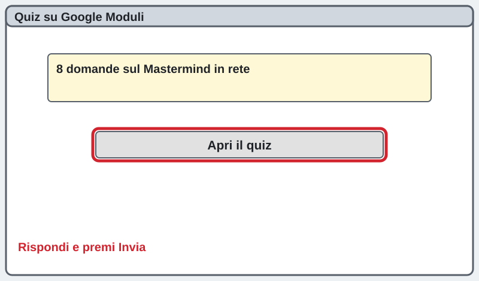

3INF · progetto mastermind-client · mercoledì 04/11/2026 · ora 2
Mastermind in rete · ora 2: partita, GitHub e quiz
La pagina viene aggiornata spesso durante la lezione: premi F5 per vedere la versione nuova.
সার্ভারের IP ঠিকানা: প্রফেসর বোর্ডে লিখবেন।
Si aggiorna da solo ogni 30 secondi.
Chi sei?
Scrivi nome e cognome: serve al cruscotto per vedere a che punto sei.
Sei bloccato? Scrivi la domanda nella casella dell'assistente in fondo alla pagina: ti risponde subito. Alza la mano solo se il PC non funziona (non si accende, niente rete, Lazarus non si apre).
আটকে গেলে পেজের নিচে সহকারীর বক্সে প্রশ্ন লেখো। শুধু PC কাজ না করলে হাত তোলো।
1Collegati di nuovo
Tieni aperto il programma dell'ora 1 e premi Connetti. Devi vedere Collegato!. FATTO!
Connetti চাপো। «Collegato!» দেখা যাবে।

2Partita di classe
Quando il Prof dice Via giocano tutti insieme: stesso codice per tutta la classe. Guarda a destra il migliore, il peggiore e il tuo posto. Gioca finché indovini.
প্রফেসর «Via» বললে সবাই একসাথে খেলে। ডানদিকে নিজের অবস্থান দেখো।

3Carica il progetto su GitHub
Apri github.com → il tuo repository → Add file → Upload files. Trascina dentro i file della cartella mastermind-client: mastermind.lpi, mastermind.lpr, unit1.pas, unit1.lfm.
github.com → নিজের repository → Add file → Upload files। mastermind-client ফোল্ডারের ফাইলগুলো টেনে আনো।

4Scrivi il messaggio del commit
Nella casella Commit changes scrivi un messaggio che dice che cosa hai fatto, poi premi Commit changes (bottone verde).
Commit changes ঘরে কী করেছ লেখো, তারপর সবুজ Commit changes বাটন চাপো।
Mastermind client collegato al server 192.168.38.70 porta 5050
5Manda il link del commit
Nel repository clicca il commit in alto (la riga con il tuo messaggio). Copia l'indirizzo dalla barra del browser, scrivilo qui sotto e premi «Manda al prof».
commit-এর লিংক কপি করে নিচে লিখে Manda al prof চাপো।
Manda il link del commit

6Quiz sul Mastermind in rete
8 domande su client, server, IP e porta. Premi il bottone verde, rispondi e premi Invia.
৮টি প্রশ্নের Moduli কুইজ করো।
Apri il quiz
La pagina viene aggiornata spesso durante la lezione: premi F5 per vedere la versione nuova.